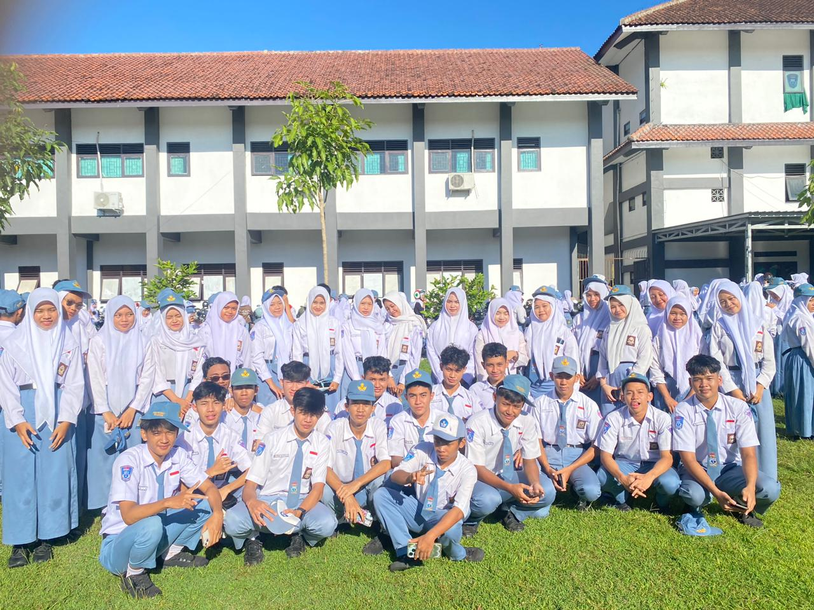

SMKN 1 KLATEN
"Bersama Belajar, Berkarya, dan Meraih Prestasi."
Selamat datang di Website Informasi Kelas XII TJKT 2 SMKN 1 Klaten. Tempat informasi seputar profil, struktur, jadwal, dan kegiatan kelas.

XII TJKT 2 merupakan salah satu kelas Program Keahlian Teknik Jaringan Komputer dan Telekomunikasi (TJKT) di SMKN 1 Klaten. Kelas ini terdiri dari siswa yang memiliki semangat belajar, bekerja sama, dan mengembangkan keterampilan di bidang teknologi.
"Mewujudkan kelas yang disiplin, berkarakter, berprestasi, kreatif, dan memiliki kompetensi sesuai bidang keahlian serta menjunjung tinggi nilai-nilai Profil Pelajar Pancasila."